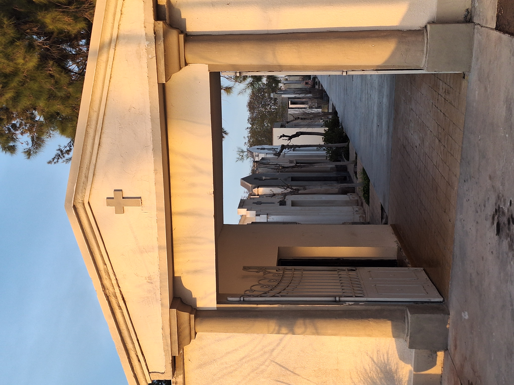
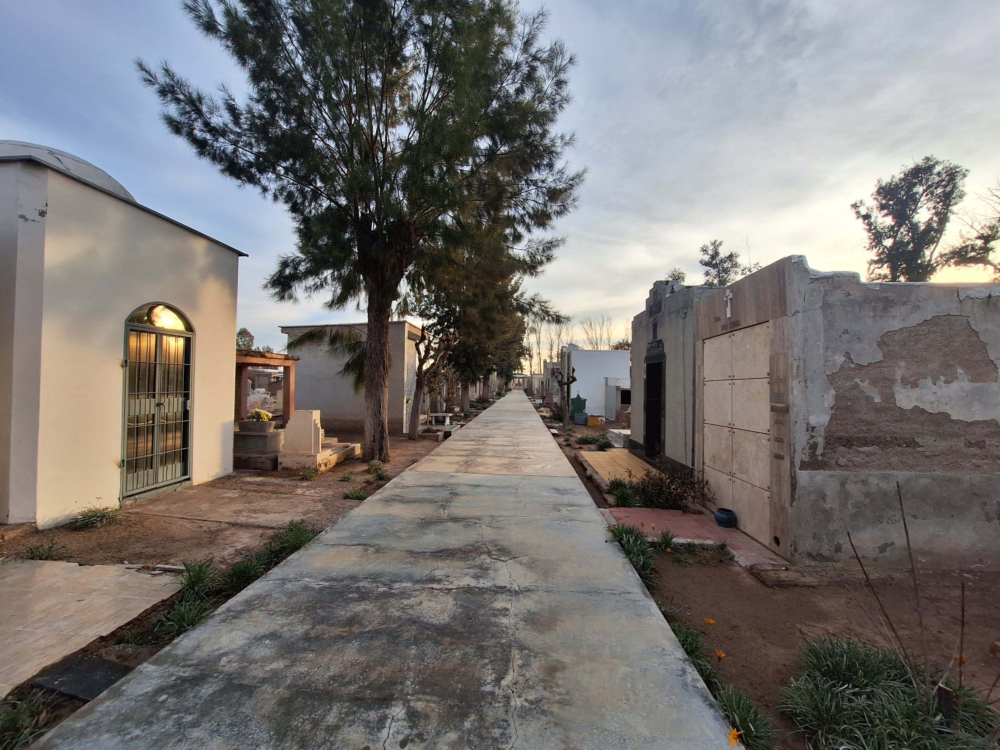
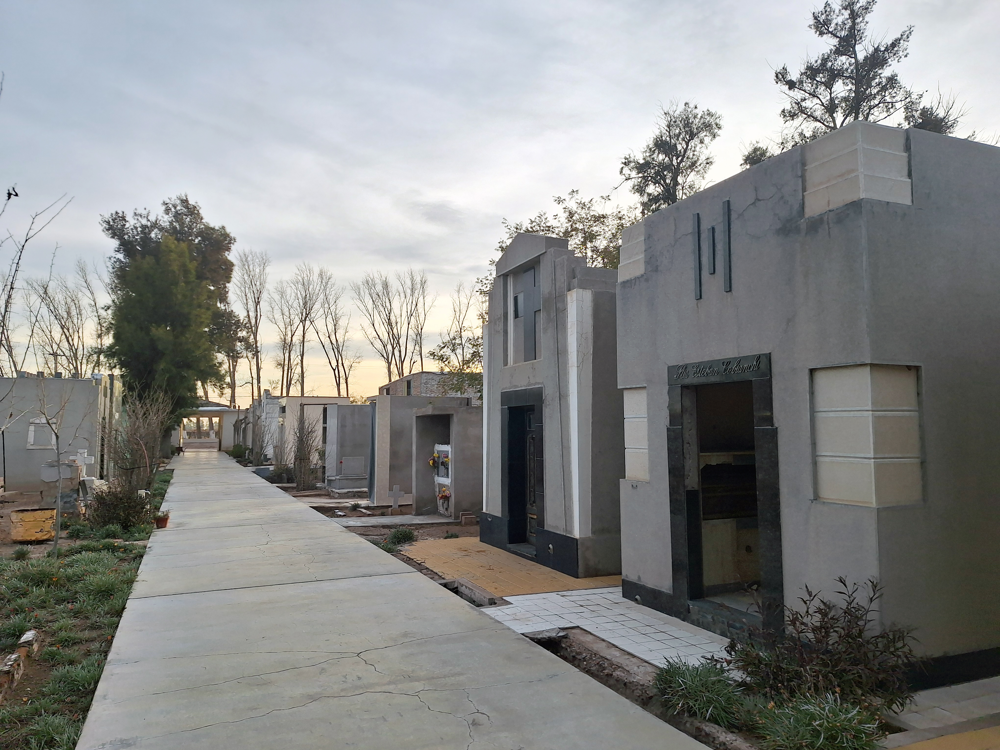
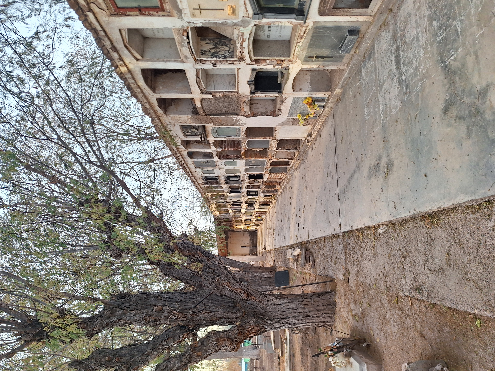

El Cementerio Distrital fue creado hacia fines del siglo XIX y conserva sepulturas que datan de 1890. Desde entonces se ha ampliado hasta conformar uno de los espacios funerarios más importantes de la zona, con influencia sobre distritos vecinos.

Su principal valor patrimonial reside en los numerosos mausoleos pertenecientes a familias que protagonizaron el desarrollo agrícola y vitivinícola de Los Barriales durante la primera mitad del siglo XX. Apellidos como Puppato, Marabini, Capadona o Susques reflejan el crecimiento económico alcanzado por el distrito y la relevancia que tuvo dentro de la vitivinicultura mendocina. Muchas de estas familias continúan vinculadas a la actividad productiva a través de bodegas y establecimientos que aún permanecen en funcionamiento.


El cementerio constituye también una valiosa fuente para reconstruir la historia local. Sin embargo, parte de ese patrimonio documental se ha perdido debido a la falta de registros sistemáticos y a los numerosos robos y actos de vandalismo que afectaron placas, esculturas y mausoleos a lo largo del tiempo.
Más que un espacio destinado al descanso de los difuntos, este cementerio constituye un verdadero archivo de piedra que aporta a la comprensión de la historia social, económica y familiar de Los Barriales.
